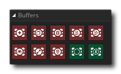

缓冲区是一个物理内存区域，用于在数据从一个地方移动到另一个地方时临时保存数据，或以某种方式进行操作它们，例如，你可以使用缓冲区来保存游戏状态数据。GameMaker Studio 2 有许多特定的缓冲区动作，比如创建，修改和加载/保存等等，但在使用它们之前，请注意以下几点：
- 一个缓冲区创建后，会自动清除并填充为0。
- 缓冲区函数的“size”参数始终指的是以字节为单位的缓冲区的大小。
- DnD™ 缓冲区总是以1字节对齐。“对齐”指的是在使用GML的缓冲区函数的时候数据如何存储在缓冲区中，但与DnD无关。
- 缓冲区中数据的读取和写入是按照顺序来的（即：你调用写入缓冲区动作三次，然后它将写入第一个数据，向前移动，写入第二个数据，再向前移动然后写入最后一个数据），有的时候可以调用“seek”的值来告诉你缓冲区中下一个读/写的位置。
- 所有数据写入缓冲区以及从缓冲区返回都是以字符串的形式，因此，如果你存储了任何实数值，你将不得不使用数据类型动作的一个将它从字符串转换为对应的值。
用于创建缓冲区的内存是系统内存，因此即使游戏失去了焦点，存储在缓冲区中的任何数据都应该是安全的，但是如果应用程序关闭或重新启动，那么它将会丢失。下面的页面解释了缓冲区如何在GameMaker Studio 2的情境中工作，并包含了几个GML的代码示例：
缓冲区库有以下动作：

|
创建缓冲区 |

|
复制缓冲区 |

|
删除缓冲区 |

|
读取缓冲区 |

|
写入缓冲区 |

|
搜寻缓冲区 |

|
获取缓冲区大小 |

|
获取缓冲区位置 |

|
如果存在缓冲区 |

|
如果是缓冲区的结束点 |